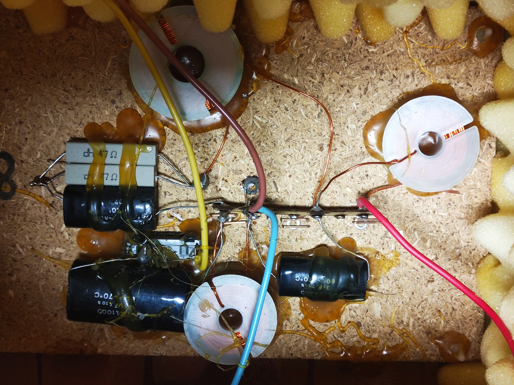
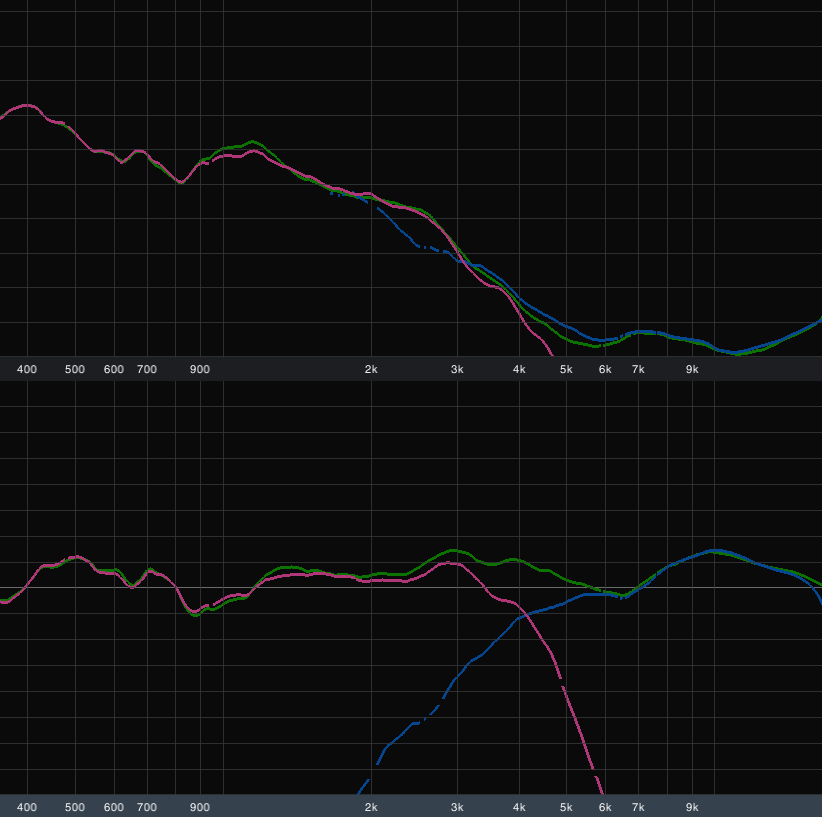
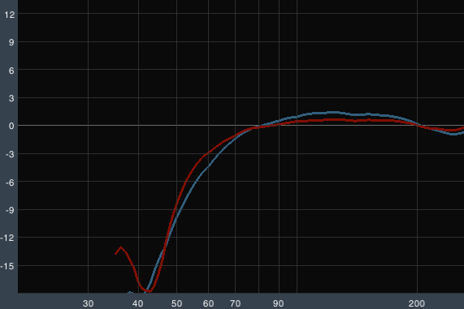

On the bench are a pair of JMR Sonate cabinets and a box of woofers and tweeters. This is a restoration job, but also a chance to look at how a late-'70s design solved time alignment without a dual-FFT rig.
Today I got a selection of components and a couple of cabinets from this famous '80s hi-fi speaker.

Why this speaker
The main reason for this investigation: a long-time audio friend is re-entering the realm of mastering. He is setting up a spare room as his studio. Several off-the-shelf commercial studio speakers passed the revue. DSP has certainly entered this world, so none of them sounded bad. But at the same time they lack the involvement to inspire you to do the work. This might be considered a good thing by some, but as sound engineers without a live audience, we do need an anchor.
The same guy is also a passionate high-end hi-fi loony with a long-time affection for JMR loudspeakers (Jean Marie Reynaud). So let's see what we can learn from this.
These Sonate speakers seem to have some physical time alignment. It is a late-'70s, early-'80s design! Ed Long posted his papers on time alignment in 1976. There were no widely spread dual-FFT measurement systems in those days. Sour grapes if somebody immediately states diffraction problems from the steep baffle step just by looking at the speakers. Read on to understand why this is less of a problem than you might think.
Let's measure and see if these speakers are also phase aligned; the simple third-order filter doesn't look that complicated.
Measurements and refoaming


Some things are a bit unclear: I got four woofers and four tweeters. Two woofers were rather crudely refoamed by somebody a couple of years ago, and two tweeters have ferrofluid while two don't (one of those is blown).
So the first thing I did was refoam the surrounds (see above), measure T/S parameters and compare them to the previously refoamed ones. Yup, they are different... Also, is the ferrofluid original or a modification by someone at a later stage?


And yes, both tweeter and woofer are most certainly as well time-aligned as phase-aligned! I had to use the ferrofluid tweeters to get the best matching response. The crossover frequency works out a bit above 4 kHz. Probably some Butterworth roll-off, as they add up some 3 dB around that point.
That is remarkably high, and only possible because the woofers are treated with some sort of shiny coating that the original Seas speakers don't seem to have. Having such a high crossover frequency means almost the complete voicing is done by the speaker alone, giving you those benefits the full-range driver community is looking after.
Next we can compare the two different refoam types:


The red line is the one refoamed by yours truly; the blue line is the one refoamed in an earlier repair. So yes, those differences in measured T/S do matter. (Not much, but hey.)
How does it sound?
So, for the conclusion: how does it sound? In one word: very musical. Still with a presentation very similar to a modern FIR-filtered system, due to the correct phase/time alignment. On the downside: also a bit old-fashioned, as in dusty and tired... ..to be continued, to see if we can get this a bit up to date.